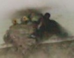
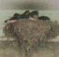
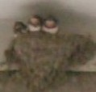

４／１、ツバメが来た。例年 飛来するが、いつもは4/10前後。ご近所では４月に入るとすぐに飛来することが多い。しかし我が家へ、いつも１週間くらい遅い。とりあえず１羽だけだったが「おお、今年は早いな」(^-^)v
ところが連れ合いというか、２羽めが ちっとも来ない。サッサと産んでサッサと育て、サッサと巣立てば 時によっては２毛作がある（一組めが巣立ったあと、遅く飛来した別の番（つが）いが 同じ巣を使って子育てする）。４月の半ばくらいになっても２羽めが来ないので、（長旅の途中で 相棒が死んてしまったのか？....）などと思ってた。
ところが４月の終わり頃、２羽めがようやく飛来。というかセット（２羽）で飛来。数日、巣の回りで３羽が入り乱れてバトルしていた。結局 そのうち２羽が落ち着いたが、なんとなく３羽めも その辺りでウロウロしている感じ。
いずれにしても５月の半ばくらいに卵を産み、10日ほど経って（5/267か27頃）孵化した。６／３ころ 少し大きくなったヒナが巣の上部から顔をのぞかせた。数えたところ ５羽もいた。いや、これは大変だわ.... いままでの経験で、１回に４羽というのが無難な数。
たしかに過去にも５羽ということはあった。しかしエサやりが大変。ヒナもエサにありつく回数が少なくなるので、巣立ちも遅くなる。それに成長して巣立ち間際になると、巣におさまりきらない。そこで外側のヒナは巣からはみ出て落ちそうになることもある。
ところが何気なく見ていると、なんだか３羽で子育てしている（?_?） 何がどうなっているのか分からないが、最初のバトル時 そういう話で落ち着いたのか？

撮影のタイミングが悪く 写真には数羽しか写っていない。
どんな話し合いの結果 そうなっっていたのか知らないが、親が３羽なら成長も早い。ヒナはどんどん大きくなり、すぐに巣からはみ出すほどになった。もちろん
それにともなって、駐車場はフン爆弾の嵐...愛車のロールスロイスとキャデラックとベンツ マイバッハのルーフを清掃するのが大変だった(笑)

そして早くも孵化から２週間後の６／１２、無事に巣立ちした。もちろん５羽同時に巣立ちするわけではない。やはりエサのもらい方で成長の早い遅いがある。いつも巣の一番前に陣取っていたヒナが一番早く成長する。そこで最初の日に巣立ちしたのは、前の方の２羽。残ったのは、まだエサを貰っている。

それでも順次 巣立ちして、いまは（６／１５）１羽も残っていない。また来年、おいで(^-^)V~~
|